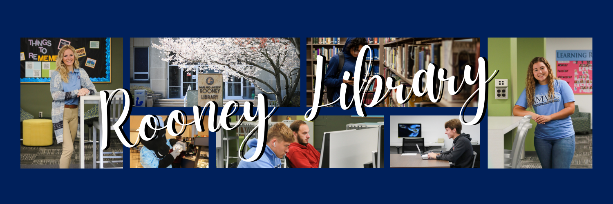
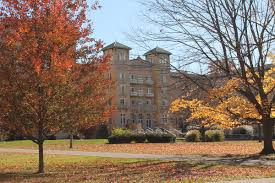

Check out the latest events on campus!
From concerts to guest speakers, there is always something happening at SMWC.
Keep an eye on the calendar and posters around campus to stay informed about upcoming events!
Feeling Integrated into the Community
Part of the college experience is going to events, meeting new people, and trying new things. SMWC gives plenty opportunities for students to get involved and build community.
Check out the calendar of events to see what's going on around campus!
There are over 30 student organizations on campus. Find one that interests you and get involved!
Don't see an organization that interests you? Start your own! There are plenty of resources to help you get started.

Rooney Library is a great place to study, do research, or just relax. It has a large collection of books, as well as study rooms and a computer lab.
Whether you need to find a book for a class, or just want a quiet place to study, Rooney Library is the place to go!
In all facilities, you'll find announcements about exciting events happening around campus.
Don't miss out on the latest updates and opportunities!
From concerts to guest speakers, there is always something happening at SMWC.
Keep an eye on the calendar and posters around campus to stay informed about upcoming events!
Take some time to enjoy the beautiful campus! No matter where you go there is something to admire.
SMWC takes pride in making their campus a beautiful place to study and live.
From dorm buildings to academic facilities, there's always something to see and do.

Saint Mary-of-the-Woods experiences all four seasons, with especially pleasant weather in the spring and fall (typically 40–70°F). On nice days, you’ll find students relaxing by the lake, walking around campus, or playing pickleball on the newly renovated courts.
Loading weather...